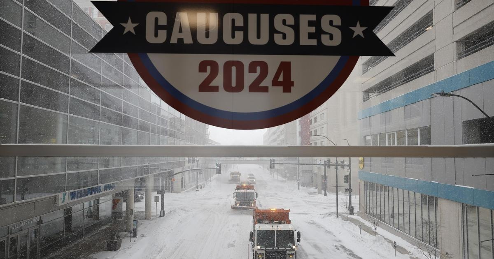

In Iowa, GOP presidential candidates concerned about impact of freezing temperatures on caucus turnoutThe Iowa caucuses Monday will be held during a dangerous, record-breaking cold front as Republican presidential candidates worry the impact will depress turnout. Temperatures are unlikely to break 0 degrees Fahrenheit, with wind chill pushing the temperature as low as -45 F Monday night, according to the National Weather Service. Officials are warning that frostbite can occur within 10 minutes of outdoor exposure and as Iowans will be lining up at their local caucus site, with some forced to wait outside for extended periods of time. "Outdoor exposure without proper winter clothing will be dangerous," said Matt Sitkowski, science editor-in-chief at The Weather Channel. The excessive cold began Friday afternoon as a blizzard blanketed Iowa, bringing low temperatures and whiteout conditions that caused most campaigns to cancel events across the Hawkeye state. Former President Donald Trump had to cancel two commit to caucus events on Saturday because of the frigid temperatures and frostbite concerns. But Trump says the inclement weather could play in his favor because the frigid temperatures could stifle support for Florida Gov. Ron DeSantis and former South Carolina Gov. Nikki Haley on caucus night. At his campaign event in Clinton last Saturday, Trump recounted that his team told him the low temperatures could be good for his turnout. "And they said, 'That's good.' Why is it good? Because the other side will never vote, because they don't have any enthusiasm," Trump said. "We won't lose one vote, because our people, they use the term, "walk on glass." They're not going to stay away. They're going to, 'walk on glass.'" DeSantis, who's invested heavily in trying to win Iowa, trudged on as best he could this weekend. On Friday, he made three campaign stops around the Des Moines area, starting at a GOP club breakfast in the morning, visiting a "get out the vote" field office in the afternoon, and then finishing with an event for supporters and out-of-state volunteers that evening at a sports bar in West Des Moines. Four other events on Friday across the state, hosted by his super PAC, "Never Back Down," were postponed. Like Trump, DeSantis claims his base of voters in the state are committed to coming out on Monday, despite the historic cold. He cited the grassroots organization effort spearheaded by his super PAC, with precinct captains who are to help ensure supporters make it to their caucus. "There's a machinery that goes with a caucus, no matter what, but especially now with what the weather is going to be like, we have that infrastructure there," DeSantis told reporters Friday. Even in the heavy snow, several volunteers for DeSantis on Friday said they went out to knock on doors. But DeSantis also thinks turnout will be lower than the 2016 GOP caucuses, with around 130,000 to 140,000 people. In 2016, about 187,000 Iowa Republicans came out to caucus, when the high temperature was 36 degrees. "If you have to go and trudge through snow to be able to earn the vote, you trudge through snow to be able to earn the vote. My wife was out there knocking on doors," DeSantis said, before adding the weather is a "major wildcard" for the ultimate turnout. DeSantis' super PAC went forward with four events Saturday, starting in the western part of the state and trekking east. Haley canceled campaign events Friday because of a blizzard but pleaded with supporters during a telephone town hall to prepare for the impending cold temperatures. "I know it's asking a lot of you to go out and caucus, but I also know we have a country to save and I will be out there in the cold," said Haley. "Please wear layers of clothes, just in case there are lines so that you are staying safe." Chris LaCavita, a Trump campaign senior adviser, says the campaign is prepared for inclement weather because it's built an operation run by Iowans. "The contingencies that we have in place, it's old-school poll workers and people who pick up people and drive them to the polls," LaCavita said. "We have all that stuff planned, and we've been planning it." When asked if he was concerned the weather could impact their turnout, LaCavita said, "wear a coat." Nidia Cavazos contributed to this report. for more features. |
 |